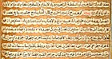

Galerie
La Calligraphie : Tradition en Islam
 Table of contents
Table of contents
La Calligraphie : Tradition en Islam*
|
“Lui qui a enseigné à l’homme l’usage de la plume, a enseigné à l’homme ce qu’il ne savait pas.”
Coran, Sura Al-‘Alaq (96:4-5) |
La Calligraphie s’est développée comme une forme d’art et d’activité dévotionnelle très importante en Islam. Elle est perçue dès lors comme une manière de préserver la parole divine. Elle a autorisé tous les aspects de l’expression créative de la culture musulmane y compris l’art et l’architecture. Plus qu’un simple moyen visuel, elle permet de rappeler au spectateur le Coran et le mot Dieu
|
“La Beauté de l’écriture vous incombe car elle est l'une des clefs du pain quotidien de l'humanité.”
Attribué au Prophète Muhammad |
De plus, le calligraphe (en Arabe al-khattat) bénéficiait d’un statut social plus élevé qu’un enlumineur, un relieur ou un peintre. Ce statut était renforcé par le fait que de nombreux croyants en Islam aimaient rivaliser dans cette forme d’art avec les calligraphes professionnels. Ce n’est point une exagération que de dire que la calligraphie est le battement de cœur de l’Islam
|
“Ecrire est une géométrie spirituelle, façonné par un instrument matériel.”
Al-Amuli dans son Nafa’is al-Funun |
La pertinence de la géométrie avec la calligraphie islamique n’est pas exagérée. Un ensemble complexe de règles géométriques a été établi par Ibn Muqlah (D. 940). Celles-ci ont été basées sur le point rhombique comme unité de la mesure. Chaque lettre a été rigoureusement disciplinée et reliée aux autres lettres (les autres éléments étant la première lettre de l'alphabet arabe, alif, et le cercle). La symétrie, l'harmonie et le modèle sont les composants essentiels du développement de la calligraphie Islamique sous ses formes variées.
|
“L'écriture est une langue avec laquelle le coeur fonctionne, elle est le dépôt de secrets, l’investigateur de nouvelles et le conservateur de la mémoire historique.”
Al-Jahiz |
L'impression de l’écriture arabe ne s’est répandue qu'au 19ème siècle avec l'arrivée des premières presses susceptible d’imprimer à Beyrouth et au Caire. Ceci peut expliquer pourquoi l'art de la calligraphie est demeuré tellement plus apprécié dans tout le monde Islamique comparé à l'Europe où l'impression a commencé à remplacer les manuscrits dès le 15ème siècle. Bien qu'un certain nombre de livres aient été imprimés, utilisant l’écriture arabe pendant les 16èmes et 17èmes siècles, en particulier en Italie et dans des pays situés plus bas, il y avait une réelle hésitation parmi les musulmans à utiliser ce nouveau procédé.
|
“L'écriture est un joyau façonné par la main à partir de l’or pur de l'intellect.”
Abu Hayyan al-Tawhidi |
Ms 1999.030
 Bi folium du “Coran bleu” |
Ce bi folium comporte une écriture kufique en or sur du vélin teint en bleu avec les cercles marginaux peints en argent. Au cours des 1000 dernières années, l'argent s'est oxydé mais la magnificence de ce morceau est encore incontestable. Le format des feuilles est beaucoup plus dans la tradition de l’Afrique du Nord où le manuscrit kufique est essentiellement horizontal. Plus tard, avec le développement des manuscrits plus verticaux, les manuscrits Arabes ont revêtu une forme de page plus familière aux lecteurs d’aujourd’hui. Symboliquement, le bleu est la couleur de la mer, du ciel et par extension de la miséricorde de Dieu envers l'humanité. Il peut également avoir une relation entre les couleurs utilisées par les artisans byzantins dans la production des cadeaux royaux. L'or est une couleur associée à la richesse et à la royauté et la combinaison du bleu et de l'or se retrouve fréquemment dans les pièces frontales du Coran. Le texte de ces feuillets est de Sura 25, al-Furqan, 48-60 et Sura 26, al-Shu‘ara’. Il était d’usage de penser que ce travail avait été commandé par le calife‘Abbaside al-Ma’mun (d. 833) pour son père Haroun Al-Rashid (D. 809) à Machhad, mais la théorie scientifique récente convient que ce Coran est certainement de l'Afrique du Nord. Un inventaire de la bibliothèque compilé en AH 693/1293 AC décrit un Coran écrit en or sur un parchemin bleu, bien que celui-ci n’ait que cinq lignes par page alors que cet exemplaire ci en comporte quinze. Près de soixante-quinze folios ont été conservés à Qayrawan pendant les années 50.Une partie de ce manuscrit se trouve à l’Institut National de l’Art et de l’Archéologie à Tunis et plusieurs feuillets se trouvent dans des musées et collections privées notamment celle du Prince Sadruddin Aga Khan. Cet exemple particulièrement rare de bi folium illustre la manière dont ce livre a été monté. Sur certains feuillets, les traces des lignes tracées avec un mastara pour guider le calligraphe, peuvent être vues. |
35.2 x 22 cm
Ms. 910 Ar
|
Coran de l’Asie Centrale
 |
Ce Coran est écrit en manuscrit naskhi noir avec des versets arabiques divisés en simples mots et courtes phrases, suivis par une traduction et un commentaire en persan. Il est l'un des deux volumes d’Asie centrale daté de AH 1100/1688 AC. Il contient de nombreuses particularités décoratives, telles des couleurs sur les ornements en marges, habituellement associés aux livres produits dans le sous-continent Indien. Ce qui n’est pas étonnant, étant donné l’activité marchande considérable existant entre le Badakhshan, d’où ce manuscrit est probablement originaire, et l'Inde. Il est également intéressant de voir également que le texte persan est intégré dans celui en arabe, écrit en noir plus dense. Il est plus habituel de trouver des manuscrits persans et arabes, une ligne pour chaque écriture, ce qui d'un point de vue calligraphique et pratique, est beaucoup plus simple à réaliser.
|

Album d’exercices calligraphiques
24.5 x 14 cm
Ms. 160 Ar
 |
 |
 |
 |
Contenant trente quatre panneaux de calligraphie arabe, montés en carte sous forme d’accordéon, cet album est écrit entièrement en écriture naskhi, peut être par Ahmad Nayrizi, le célèbre perse, pratiquant le naskh au 12èmeAH/18ème AC siècle. Ce travail n’est pas daté mais cela n’a rien d’inhabituel car ces pages peuvent se concevoir comme des exemplaires de feuilles calligraphiques d’entraînement.
25 x 14 cm
Ms 596 Ar
|
Sharh al-Tadhkira  ShaTexte en gros plan
|
Nasir al-Din al-Tusi (d. 1274) était l’une des figures intellectuelles principales du 7ème AH /13ème AC siècle. L’Islam et son vaste travail en écriture a inclus des travaux en philosophie, théologie, mathématiques, physiques et astronomie. Après avoir complété ses études traditionnelles al-Tusi a trouvé des mècènes en la cour ismailie de Perse, quelque part vers 620 AH /1220 AC. Les vingt cinq années suivantes, al-Tusi est resté en Quhistan et dans la forteresse ismailie de Alamut, utilisant sa riche bibliothèque pour écrire quelques uns de ses travaux philosophiques et scientifiques les plus importants. Ce manuscrit, un compte rendu d’un travail de Nasir al-Din al-Tusi' sur l’astronomie, est d’un érudit du 16ème siècle, ‘Abd al-‘Ali al-Birjandi (d.934 AH /1528 AC), et figure parmi un certains nombres de travaux scientifiques de la bibliothèque de l'Institut. Il a été copié à Sha‘ban en 1029/1620. Le texte est entièrement écrit en encre noire et rouge avec des diagrammes illustrant plusieurs des éléments astronomiques étudiés
|
Imamuddin, S.M. Arabic Writing and Arab Libraries. Ta-Ha: London, 1983.
Kelk-e Meshkin. A Selection of the Works Exhibited at the First Islamic Calligraphy Festival. Iran Visual Arts Association: Tehran, 1997.
Khatibi, Abdelkebir. The Splendour of Islamic Calligraphy. Thames and Hudson: London, 1976.
Lings, Martin. The Quranic Art of Calligraphy and Illumination. Scorpion: London, 1987.
Nasr, Seyyed Hossein. Islamic Art and Spirituality. Golgonooza: Ipswich, 1987.
Safadi, Yasin Hamid. Islamic Calligraphy. Thames and Hudson: London, 1978.
Schimmel, Annemarie. Calligraphy and Islamic Culture. New York University Press: New York, 1984.
Scott, Michael. “In the Beginning was the Word.” Vancouver Sun October 20, 2001: D10-D11. [PDF 2.5 Mb, with permission of Vancouver Sun.]
Welch, Anthony. Calligraphy in the Arts of the Muslim World. Asian Society: Austin, 1979.
Cette présentation est une version adaptée et éditée d'après une conférence donnée par le Dr Duncan Haldane à l'ouverture de l'exposition «l'Esprit de l'Islam : Connaître l'Islam à travers sa Calligraphie» donnée à l'Université de Colombie britannique, au Canada le 21 octobre, 2001. L'exposition a continué jusqu'au 12 mai, 2002.
 Entrée
Entrée